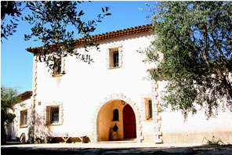
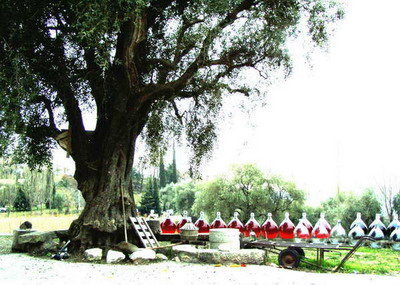

A Visit to Nice
Richard E. Quandt
We spent a week in Nice, which is a wonderful city with great food, and I remembered that the last time I was there
I had tasted a white wine from Clos Saint Vincent, which I liked very much. So, on this occasion we took a taxi to Clos St. Vincent,
which is some five miles outside the city, up some tortuous and narrow roads climbing up into the hills behind Nice, and which our tax driver accomplished as if
he were auditioning for the Grand Prix de Monaco (which actually took place a week earlier). 
The charming headquarters for the vineyard, which also serves as the family's home, is nestled against the steep hillside, with a parking area in front and a swimming pool behind.
We were received by the gracious lady of the house who immediately proceeded to the most important matter, namely the tasting of their wines.
Clos Saint Vincent is in the Appelation Bellet, which is very small indeed, only about 10 wines qualify for this appelation. It produces a red,
a rosé and a white wine; altogether some 20,000 bottles a year. The grape used in making the rosé is called Braquet, the red uses Folle noire (90%) and Grenache (10%),
and the white, which was my favorite, is based on Roll, also known as Vermentino. It is dry, but with a wonderful fruity flavor that
reminded predominantly of some tropical fruits such as mango or passion fruit. The rosé was even drier, with
less intense bouquet and flavor and the red largely reminded me of Rhône wines. The wine from the oldest vines is called "Vino di Gio"
Named after the founder of the vineyard, Joseph Sergi, known as "Gio." Mention must also be made of a Marc that they make, which was astonishingly good.
The address of the vineyard is Collet des Fourniers–Saint-Roman-de-Bellet, 06200 Nice, France,
Tel: 33-(0)4 92 15-12-69. See the website http://www.clos-st-vincent.fr/
.
With such a small production it is a miracle that any is imported into the U.S., but in fact their agent in the U.S. is
Martine's Wines, in Novato, CA. See Martine's Wines, Inc.
285 Bel Marin Keys Blvd, Suite Q, Novato, CA 94949; Tel:(800) 344-1801, (415) 883-0400, e-mail:
info@mwines.com.
Next day we visited another vineyard, owned by René Rasse, in
Saint Jeannet called Vignoble des Hautes Collines de la Côte d'Azur, located
at Chemin du Collet des Fournier Saint-Roman-de-Bellet, 06200 Nice, Tel: 33 (0)4 92 15 12 69.
 The red wine of the vineyard is made from Mourvèdre, Merlot, Cabernet Sauvignon, Syrah, Grenache and Braquet; the white from Rolle, Uni Blanc and Chardonnay, the Rosé
from Grenache Noir and Mourvèdre. In addition, they also make a naturally sweet wine from either the Muscat d'Alexandrie grape or the Rolle grape in which botrytis does its usual job.
I was astonished to see on a low retaining wall at the edge of the terrasse about 30 or 40 very large demijohns filled with either white or red wine; I was told that depending on the
wine they sit in the sun from 3 to 9 months, which is a treatment that "stabilizes" the wines. I estimated that the capacity of these demijohns was not less than 5 gallons and maybe as much as 10.
I must confess that I have never seen this before and several sommeliers with which I discussed this admitted that they had never heard of this practice either.
The red wine of the vineyard is made from Mourvèdre, Merlot, Cabernet Sauvignon, Syrah, Grenache and Braquet; the white from Rolle, Uni Blanc and Chardonnay, the Rosé
from Grenache Noir and Mourvèdre. In addition, they also make a naturally sweet wine from either the Muscat d'Alexandrie grape or the Rolle grape in which botrytis does its usual job.
I was astonished to see on a low retaining wall at the edge of the terrasse about 30 or 40 very large demijohns filled with either white or red wine; I was told that depending on the
wine they sit in the sun from 3 to 9 months, which is a treatment that "stabilizes" the wines. I estimated that the capacity of these demijohns was not less than 5 gallons and maybe as much as 10.
I must confess that I have never seen this before and several sommeliers with which I discussed this admitted that they had never heard of this practice either.